пошаговый разбор на реальной установке · 8 октября 2026
Чистая Joomla 6.1.4, русский языковой пакет, ни одного стороннего расширения. На ней собран редакционный процесс с четырьмя ролями — репортёр, редактор отдела, корректор, главред — и снят глазами каждого из них. Всё, что здесь показано, сделано штатными средствами: группами, уровнями доступа, процессом публикации с переходами и правами, категорией-отделом и шаблоном со стилями.
Сценарий настроен теми же моделями, которыми пользуется админка (com_users, com_workflow, com_categories, com_content, com_menus), поэтому каждый экран воспроизводим руками по описанию под ним. Снимки сделаны движком WebKit в виртуальном экране 1440 пикселей шириной.
Прежде чем рисовать стадии и стрелки, редакцию нужно описать в терминах Joomla: группы пользователей, уровень доступа и разрешение на сам механизм процессов. Это три экрана и одна галочка.
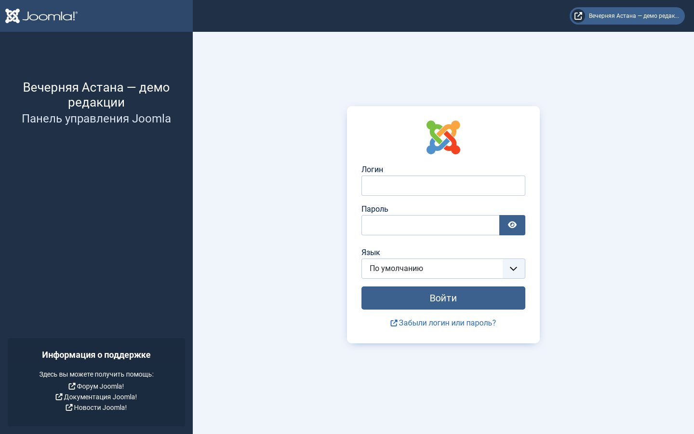
Так выглядит Joomla 6.1.4 сразу после установки: шаблон Atum, боковая панель с названием сайта, форма входа с выбором языка. Русский пакет поставлен из релиза 6.1.4.1 команды JPathRu — в день выхода ядра у него есть точное соответствие.
На странице входа уже видна одна особенность админки: язык выбирается на входе, а не в настройках, и у каждого сотрудника может быть свой. Для казахстанской редакции это даёт параллельную работу в русском и, когда появится пакет, казахском интерфейсе на одном сайте.
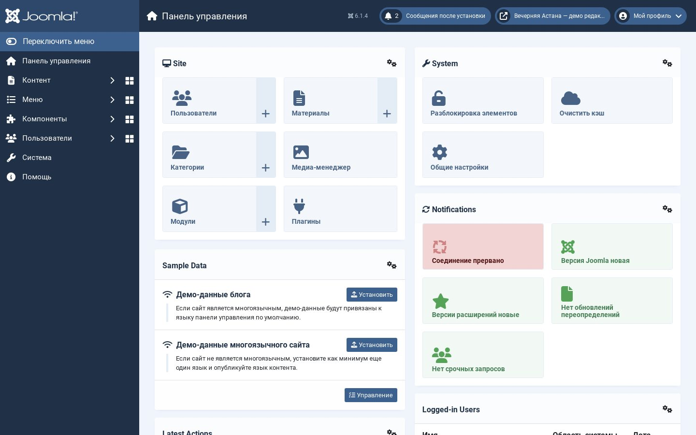
Полный набор: содержимое, система, уведомления, статистика. В правой колонке — «недавно добавленные материалы» с колонкой Этап: как только включён процесс публикации, Joomla показывает стадию каждого материала рядом с автором и датой. Эту колонку мы ещё увидим урезанной — у репортёра дашборд сжимается до того, что ему разрешено.
Для снимков отключены автозапуск обучающего тура и баннер статистики: оба штатных плагина полезны живой редакции и мешают только скриншотам.
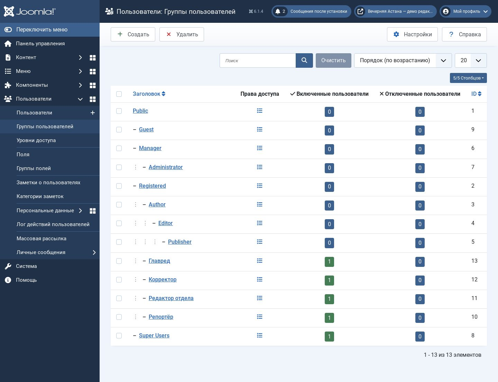
Штатные Author, Editor и Publisher мы не трогаем: руководство Joomla советует заводить свои группы, чтобы права не наследовались от чужих ролей. «Репортёр», «Редактор отдела», «Корректор» и «Главред» созданы детьми группы Registered — это даёт им вход на сайт и ничего больше. Всё остальное мы раздадим явно.
Дерево групп — первая ось редакционной модели. Вторая — категории, они станут отделами. Пересечение «группа × категория» и есть зона ответственности.
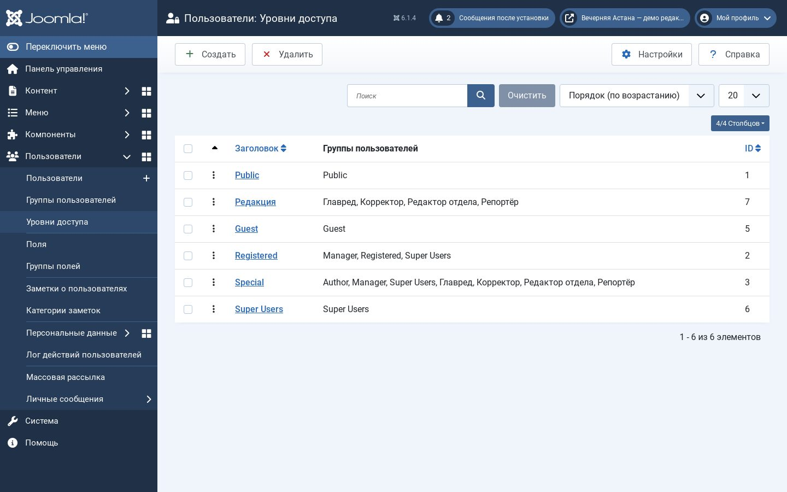
Права отвечают на вопрос «кто действует», уровни доступа — «кто видит». Новый уровень «Редакция» включает все четыре группы: им можно показать служебные материалы, модули и пункты меню, невидимые читателю. Четыре группы добавлены и в уровень Special — иначе репортёр не увидит собственный неопубликованный черновик с лицевой стороны сайта. На этом месте спотыкается первый пример в руководстве Joomla; второй пример это и решает.
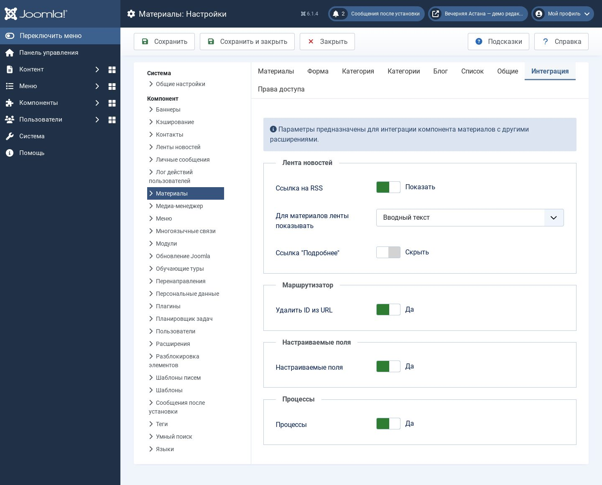
Процессы публикации в Joomla выключены по умолчанию: небольшому сайту с одним автором они не нужны, и ядро не навязывает лишнего. Включаются одной настройкой компонента «Материалы». После этого статические состояния — опубликовано, не опубликовано, в архиве, в корзине — остаются, а поверх них появляются стадии и переходы. Выключить процессы можно в любой момент без потери содержания: состояния и стадии хранятся порознь.
Сердце конвейера — компонент «Процессы». Процесс состоит из стадий и переходов; у каждого перехода четыре вкладки: откуда и куда, что сделать с материалом, кому написать и кто вправе нажать.
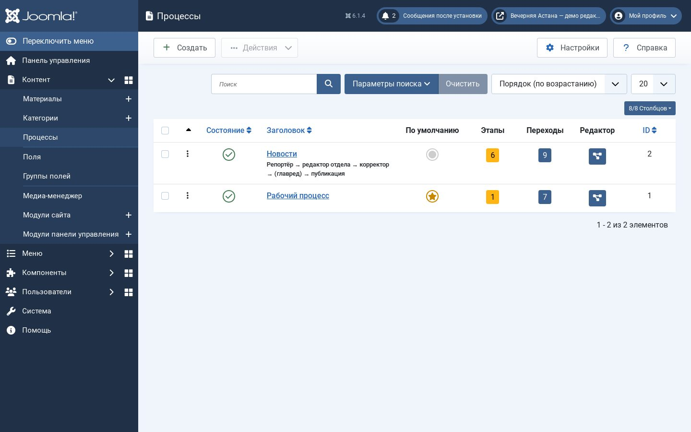
«Рабочий процесс» — штатный, с одной стадией; он остаётся процессом по умолчанию для категорий без явного выбора. Рядом — наш процесс «Новости» с пятью стадиями и девятью переходами. Процессов на сайте может быть сколько угодно: отдел спецпроектов может жить по своему, более длинному; разделу «Срочно» хватит двух стадий.
Материал закрепляется за процессом при первом сохранении — по процессу своей категории. Сменить процесс потом может лишь суперпользователь пакетной операцией «Сменить этап», поэтому категорию важного материала задают сразу.
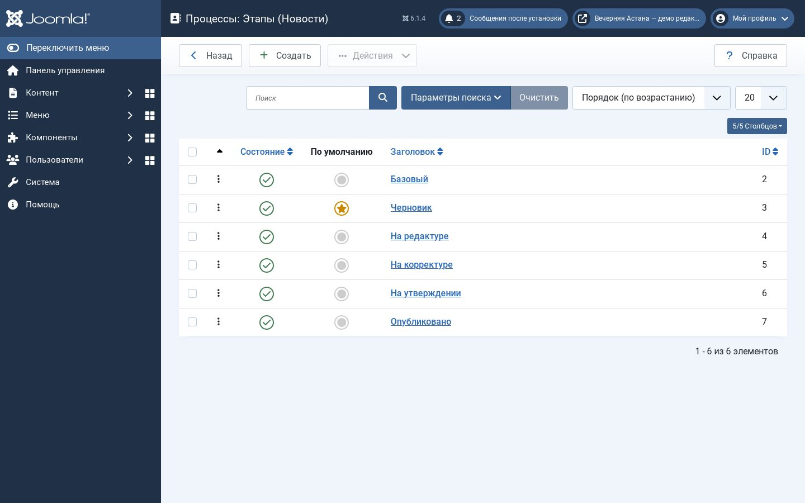
Черновик, на редактуре, на корректуре, на утверждении, опубликовано. «Черновик» помечен как стадия по умолчанию — туда попадает каждый новый материал в категории с этим процессом. Стадия сама по себе ничего не делает с материалом: она — метка положения на конвейере. Действия живут в переходах.
Стадия «На утверждении» необязательна: обычная новость минует её, а материал особой важности проходит через главреда. Как это устроено — через права на переходы, ниже.
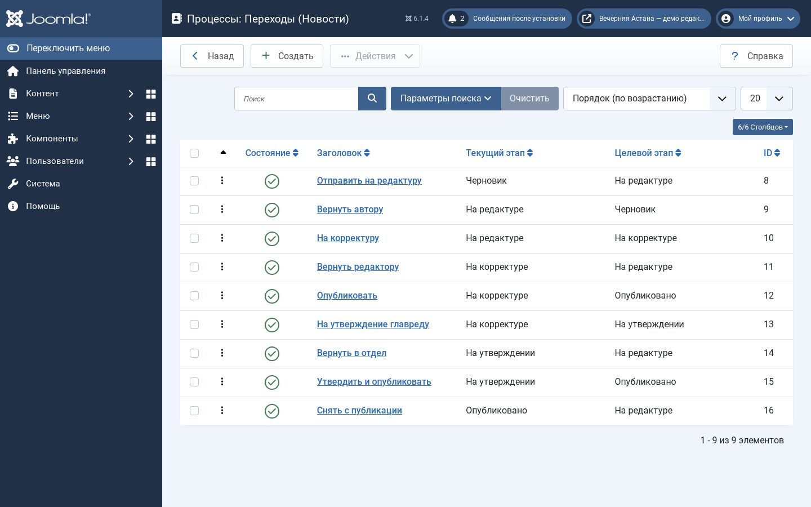
Каждая стрелка схемы — строка в этом списке с текущей и целевой стадией. Вперёд: отправить на редактуру, на корректуру, опубликовать, на утверждение главреду, утвердить и опубликовать. Назад: вернуть автору, вернуть редактору, вернуть в отдел, снять с публикации. Обратные переходы так же важны, как прямые: без них корректор не сможет вернуть текст редактору, не публикуя.
Список переходов читается как регламент редакции — и это главное достоинство модели: правила живут не в головах, а в настройке, которую видно.
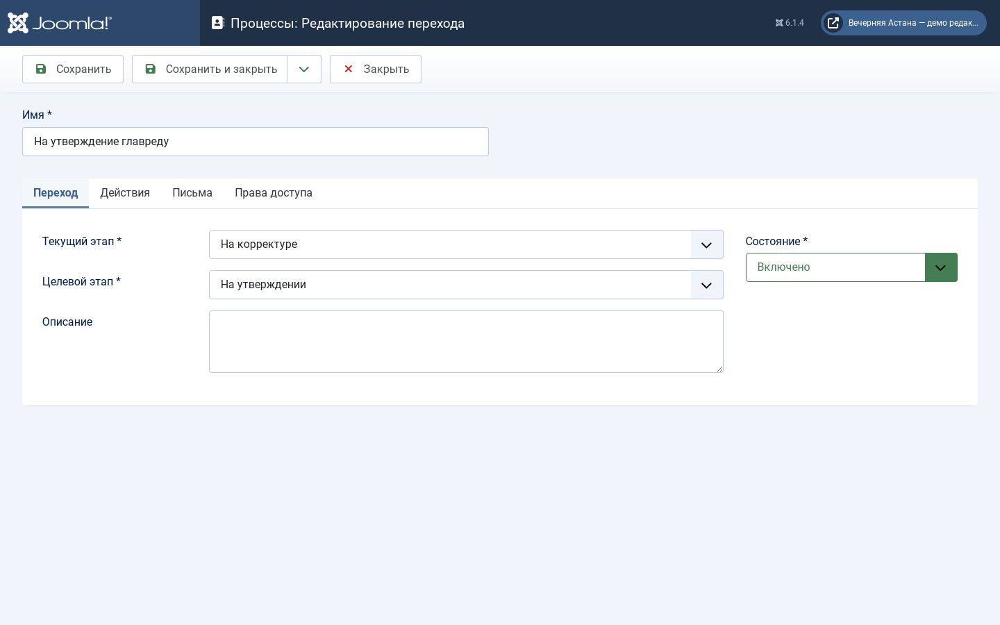
Текущий этап — «На корректуре», целевой — «На утверждении». Переход можно привязать и ко «всем стадиям» сразу — так устроены, например, «снять с публикации» или «в архив» в типовых схемах. Описание — для коллег, которые откроют настройку через год.
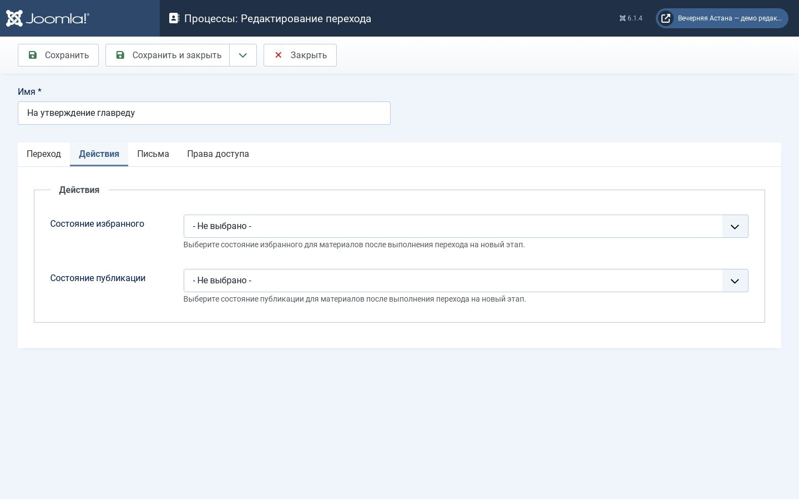
Здесь переход получает силу: «состояние публикации» и «состояние избранного». У перехода к главреду оба поля не выбраны — материал лишь меняет стадию. У перехода «Утвердить и опубликовать» выставлены «опубликовано» и «в избранном»: нажатие главреда разом публикует текст и ставит его в ленту главной. Эти два поля — плагины Workflow – Publishing и Workflow – Featuring; разработчик может добавить свои действия, например отправку в Telegram-канал.
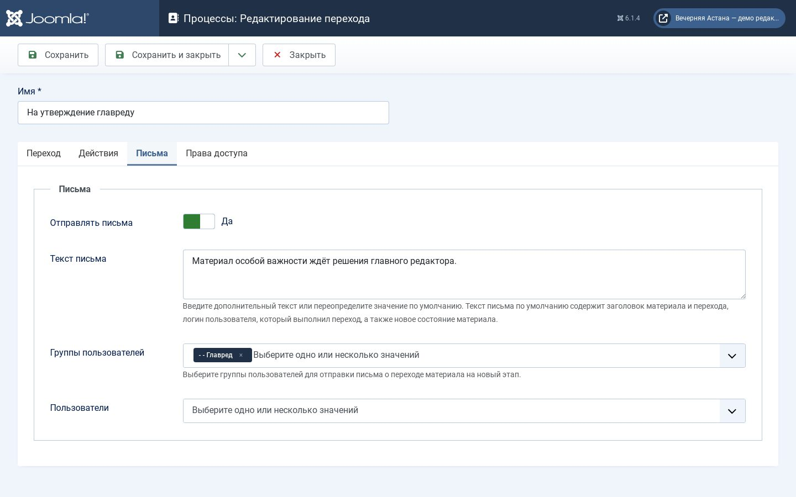
Переход к главреду отправляет письмо группе «Главред» с текстом «Материал особой важности ждёт решения главного редактора». Получателей можно назначить группами или поимённо; текст — свой у каждого перехода. Так очередь корректора и очередь главреда пополняются сами, без мессенджеров. Единственное условие — у получателя должна стоять отметка «получать системные письма».
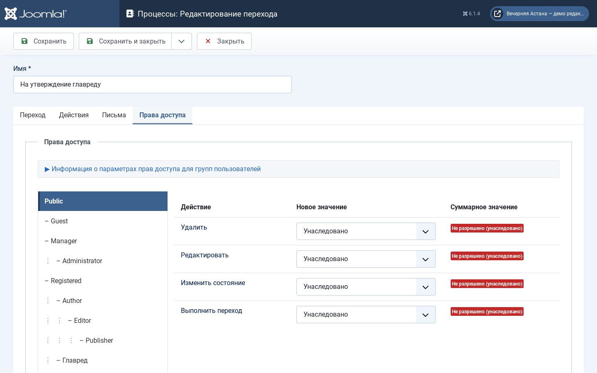
Единственное действие — «выполнить переход», и оно раздаётся по группам. У перехода к главреду оно разрешено редактору отдела и главреду, запрещено репортёру и корректору. Именно отсюда берётся «особая важность»: редактор отдела сам решает, публиковать новость или отправить главреду, а корректору доступен только возврат редактору. Права на переходы наследуются от процесса к переходу, поэтому общие разрешения задаются один раз на процессе, а исключения — точечно.
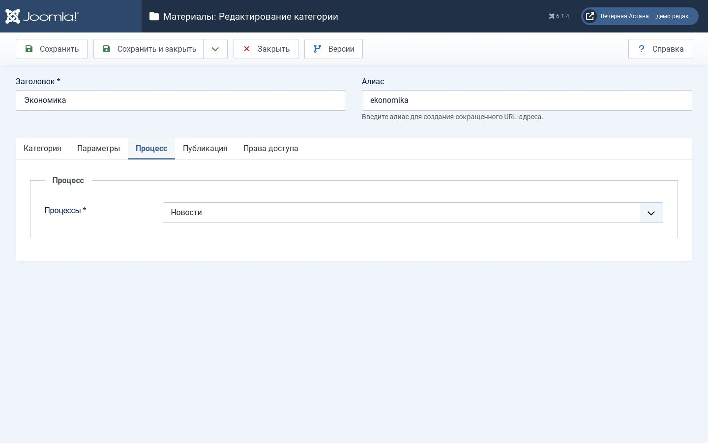
Отдел экономики — категория «Экономика», и у неё выбран процесс «Новости». Вкладка «Права доступа» той же категории задаёт зону ответственности: репортёр создаёт и правит своё, редактор отдела правит чужое и меняет состояние, корректор правит без смены состояния, главред может всё, включая удаление. Эти права действуют только внутри этой категории — редактор экономики не тронет материал отдела спорта.
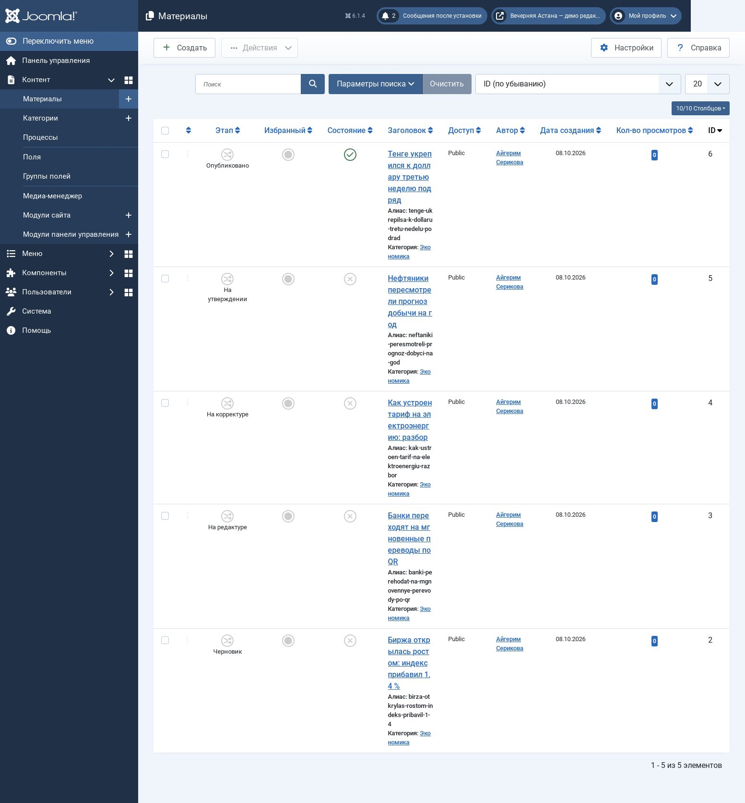
Пять демонстрационных новостей отдела экономики проведены по конвейеру до разных стадий: черновик, на редактуре, на корректуре, на утверждении, опубликовано. Колонка «Этап» появляется в списке автоматически; по ней работает фильтр, так что очередь корректора — это один фильтр «на корректуре». Там же пакетная операция «Сменить этап» для исправления ошибок.
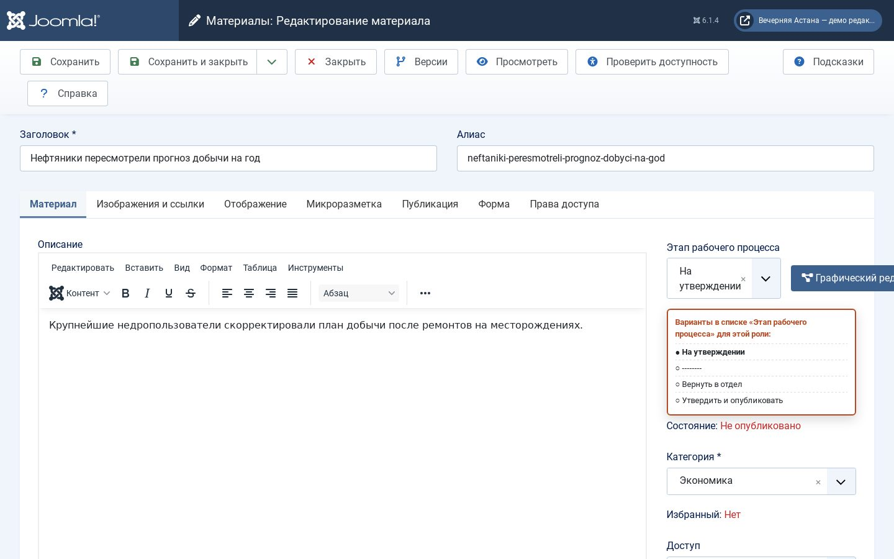
Там, где у сайта без процессов стоит «Состояние», с процессами появляется поле «Этап рабочего процесса»: текущая стадия и под чертой — переходы, которые этому пользователю разрешены. Суперпользователь видит оба перехода из стадии «На утверждении». Для наглядности на снимках варианты списка выведены в рамке под полем — в живой админке они раскрываются щелчком.
Состояние публикации показано отдельно и серым: при включённых процессах его меняют переходы, а не ручной выбор, и это защищает регламент от обхода.
Один и тот же сайт, четыре входа. Админка перестраивается по правам группы: исчезают разделы, к которым нет доступа, а в карточке материала остаются только разрешённые переходы.
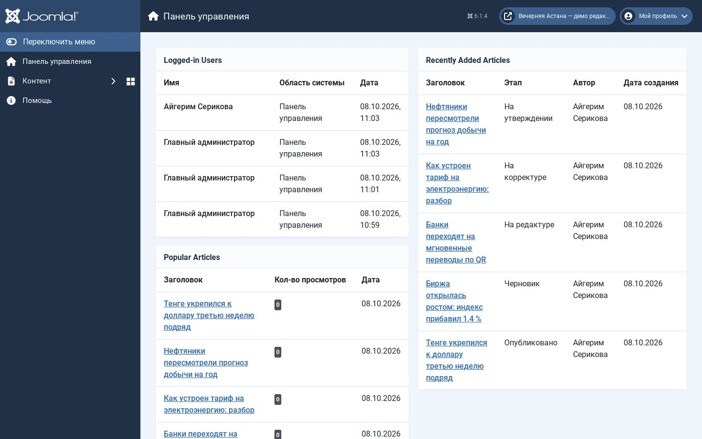
Вход в панель управления разрешён, но доступ к интерфейсу администрирования открыт только компоненту «Материалы». Меню слева сжалось до одного пункта; из дашборда исчезли система, пользователи и уведомления, остались недавние материалы и список коллег в сети. Это не отдельная «урезанная админка» — это та же Atum, прочитавшая права группы.
Репортёр видит материалы отдела, но править может только свои: право «изменять своё» распространяется лишь на то, где он автор. Чужие заголовки в таком списке остаются без ссылки — на снимке все пять новостей принадлежат одному автору, поэтому ссылки есть у всех. Кнопки смены состояния для него не активны: состоянием управляют переходы.
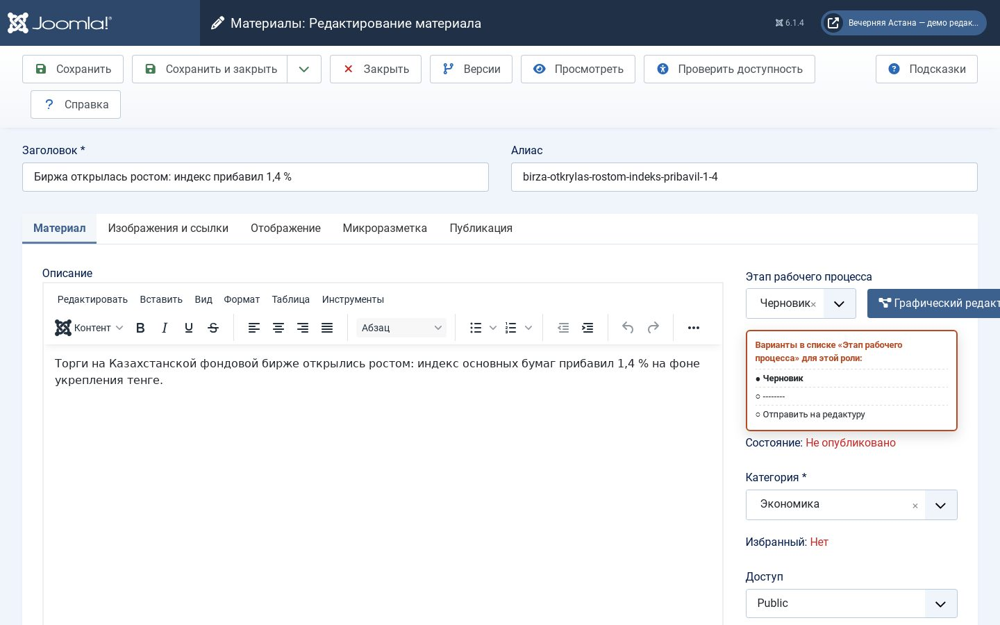
Стадия — «Черновик», в списке — только «Отправить на редактуру». Ни опубликовать, ни отправить сразу корректору репортёр не может: прав на эти переходы у его группы нет, и Joomla их даже не показывает. Нажатие отправит письмо редакторам отдела — это настроено во вкладке «Письма» перехода.
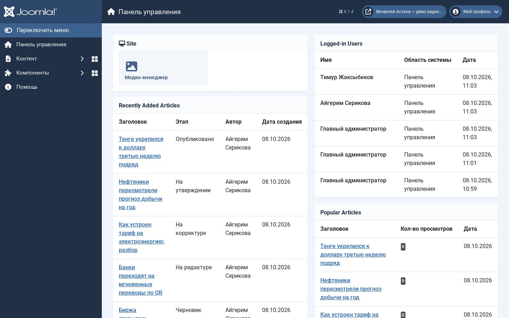
У редактора в меню добавились «Компоненты» с медиаменеджером, категориями и метками: право создавать метки отдано именно редакторам отделов, чтобы дерево смыслов росло без дублей и опечаток. Системных разделов по-прежнему нет.
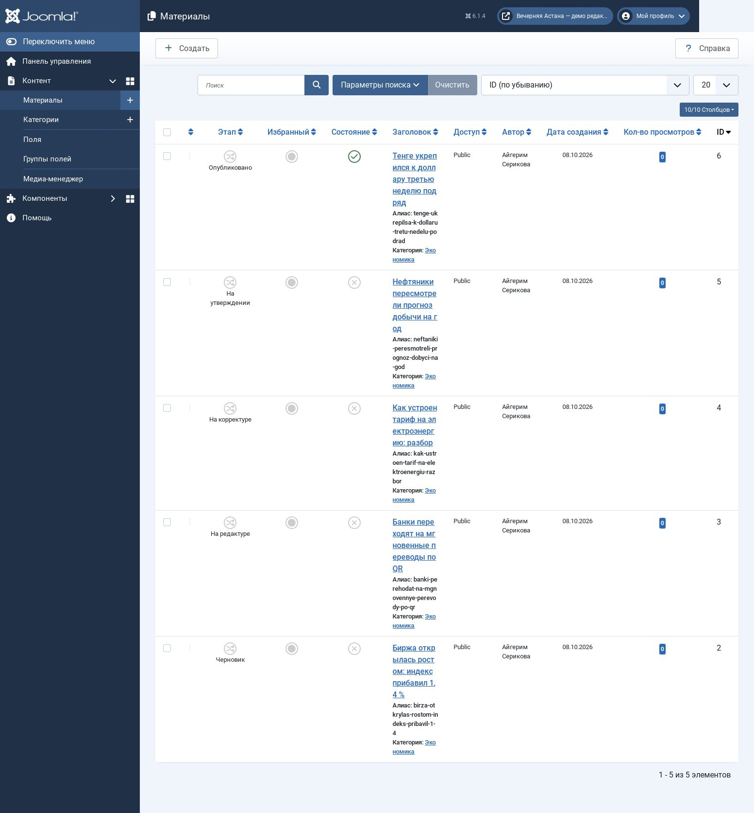
Тот же список, но каждый заголовок — ссылка: редактор правит чужое. Фильтр по стадии «На редактуре» даёт его очередь; стадия «На корректуре» — очередь коллеги, в которую он может заглянуть, но не станет вмешиваться.
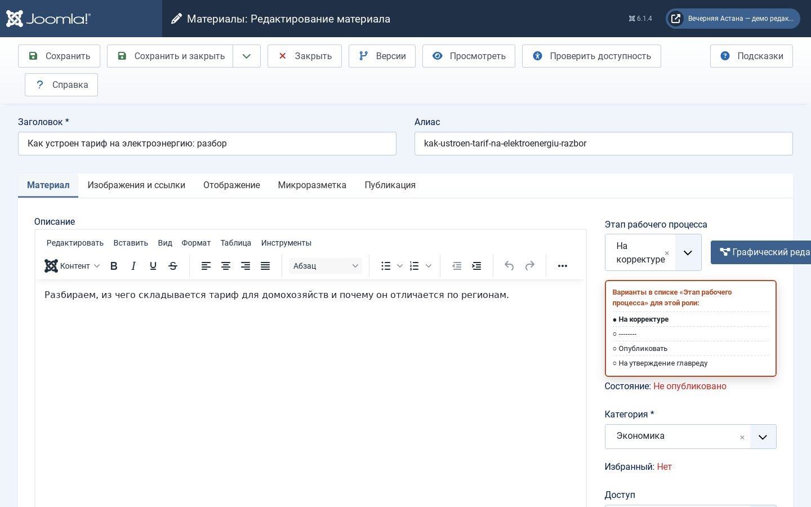
Стадия — «На корректуре». Редактору доступны два пути: «Опубликовать» — обычная новость уходит на сайт — и «На утверждение главреду» — для материала особой важности. «Вернуть редактору» в списке нет: этот переход принадлежит корректору и главреду. Так одна и та же стадия даёт разным ролям разные кнопки.
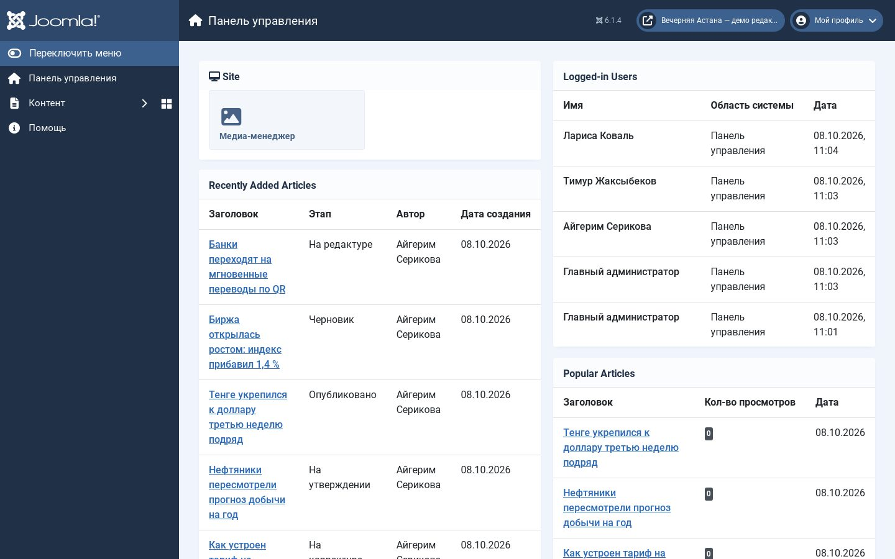
Корректору открыты материалы и медиаменеджер — проверить подписи к фотографиям тоже его работа. Категории и метки скрыты: структура сайта не его зона. Дашборд показывает те же недавние материалы с этапами, так что очередь видна с первого экрана.
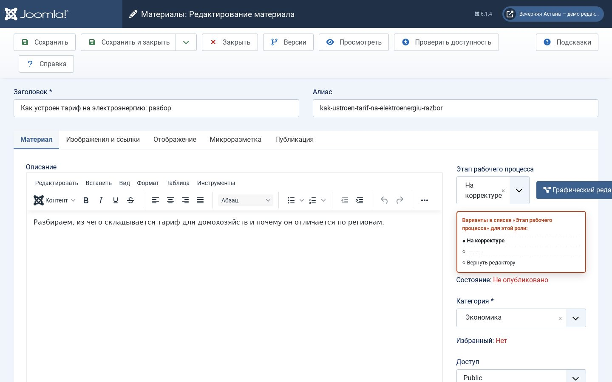
У корректора в списке один переход — «Вернуть редактору». Он может исправить текст, сохранить, посмотреть версии и сравнить, что менял редактор; опубликовать или отправить главреду — нет. Право «менять состояние» у его группы отсутствует, и это согласовано с правами на переходы.
Заметка к версии — место для замечаний корректора; комментариев на полях у Joomla нет, и это названо в докладе границей.
Главред видит материалы всех стадий, ему открыты категории, метки, медиа, модули, меню, баннеры и пользователи — всё, чем живёт редакция. Закрыта только «Система»: обновления, настройки сервера и плагины остаются за техническим администратором.
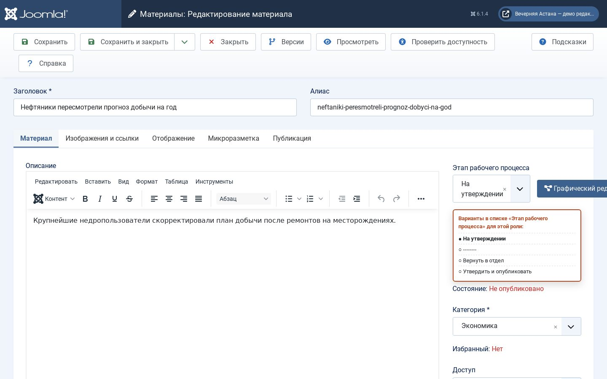
Стадия — «На утверждении», и два перехода принадлежат только главреду: «Вернуть в отдел» и «Утвердить и опубликовать». Второй настроен так, что материал одновременно публикуется и попадает в избранное на главной. После публикации только главред может снять материал — это тоже переход, и его право закреплено за группой.
Редакция, которая живёт на сайте, а не в панели управления, получает те же стадии и права в лицевых формах — через пункт меню и уровень доступа.
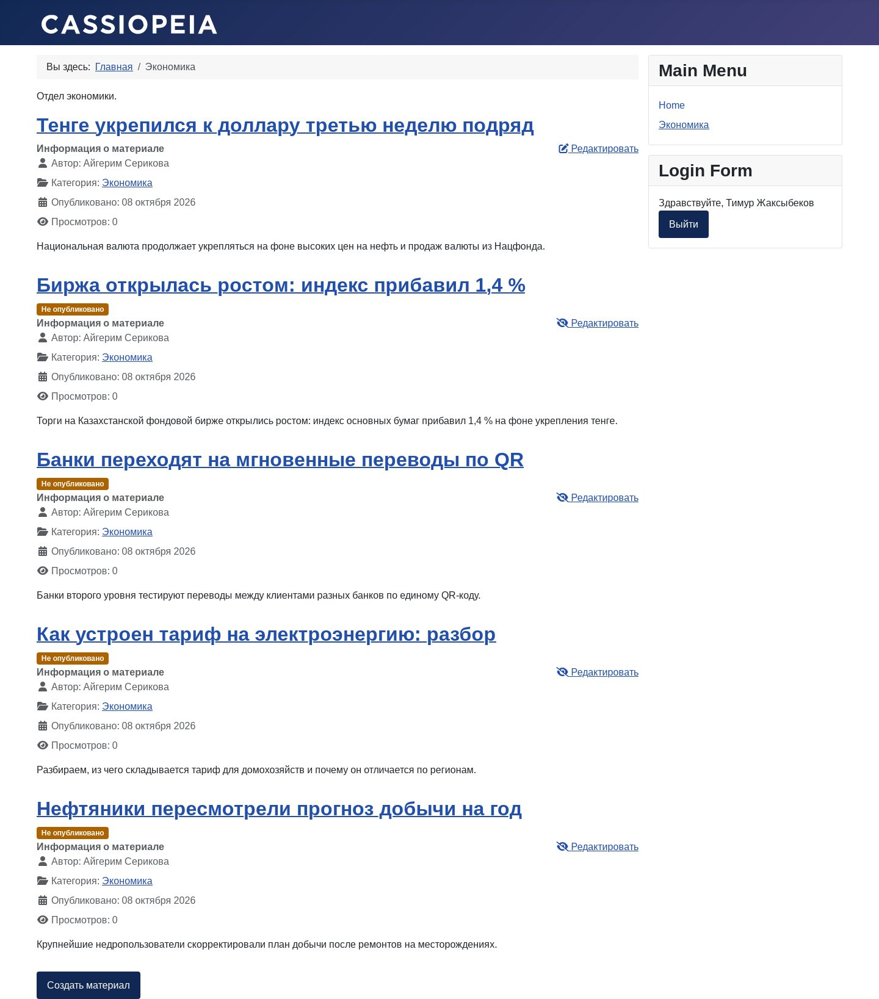
Редактор вошёл на сайт через штатный модуль входа и видит в блоге отдела все материалы, включая неопубликованные, — с пометкой состояния и ссылкой «Редактировать» у каждого. Читатель без входа увидит только опубликованные. Разницу даёт уровень доступа Special, в который включены редакционные группы.
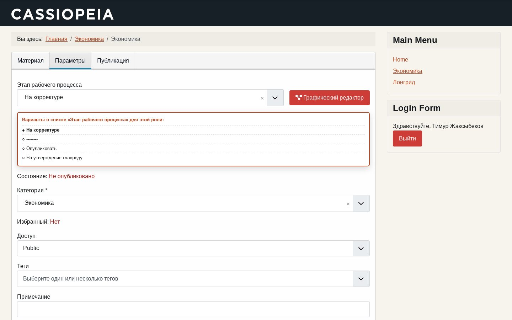
В лицевой форме поле «Этап рабочего процесса» стоит на вкладке «Параметры» — и показывает редактору ровно те же два перехода, что и админка: «Опубликовать» и «На утверждение главреду». Права едины для обеих сторон сайта, настраиваются один раз.
Руководство пользователя, написанное для четвёртой ветки, помещает это поле на вкладку «Публикация»; в 6.1.4 оно переехало на «Параметры». Расхождение занесено в реестр доклада.
Шаблон в Joomla — не одна обёртка на весь сайт, а набор стилей, и стиль назначается пункту меню. Дочерний шаблон наследует всё от родителя, переопределяет что угодно и переживает обновления. На практике это значит: разделы с разным дизайном, спецпроекты без шапки, интерактивные лонгриды внутри сайта.
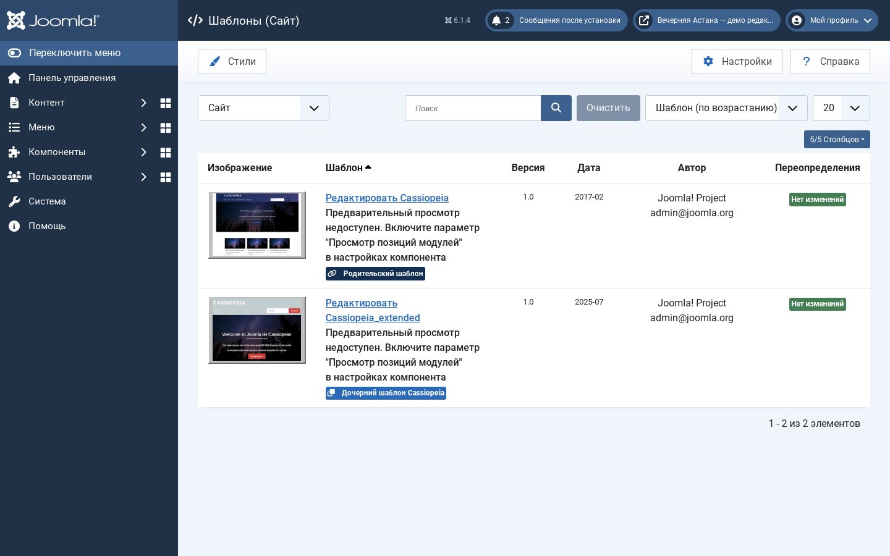
Чистая Joomla 6 приходит уже с парой: Cassiopeia и Cassiopeia Extended — дочерний шаблон, добавленный в шестой версии ради настройки цветов и шрифтов без правки CSS. Он же — живой образец того, как дочерний шаблон устроен: своя папка в templates, свой templateDetails.xml с указанием родителя, свои переопределения, а всё остальное берётся у Cassiopeia.
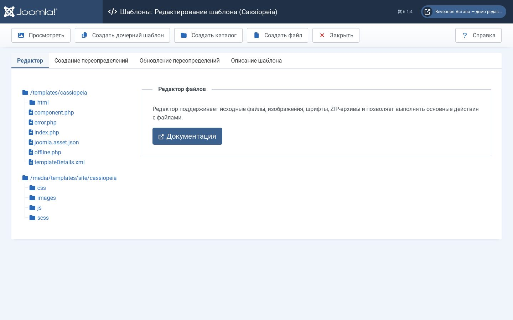
Дочерний шаблон создаётся одной кнопкой из карточки родителя: Joomla спрашивает имя, копирует структуру, регистрирует шаблон и предлагает скопировать стили. Дальше в ребёнке меняют только то, что нужно, — макет материала, шапку, цвета; при обновлении Cassiopeia изменения не затираются, потому что живут в другой папке.
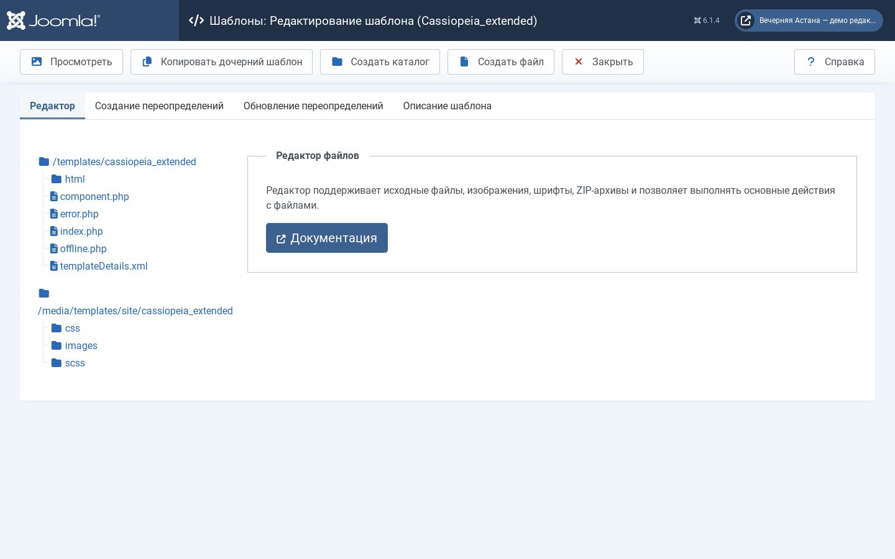
Дерево файлов ребёнка короткое: index.php, component.php, error.php, offline.php, templateDetails.xml и папки css, images, scss в media. Всего остального — макетов модулей, компонентов, системных файлов — здесь нет: они наследуются. Вкладки «Создание переопределений» и «Обновление переопределений» рядом: любой макет ядра можно переопределить в ребёнке, и Joomla предупредит, когда ядро обновит исходный макет.
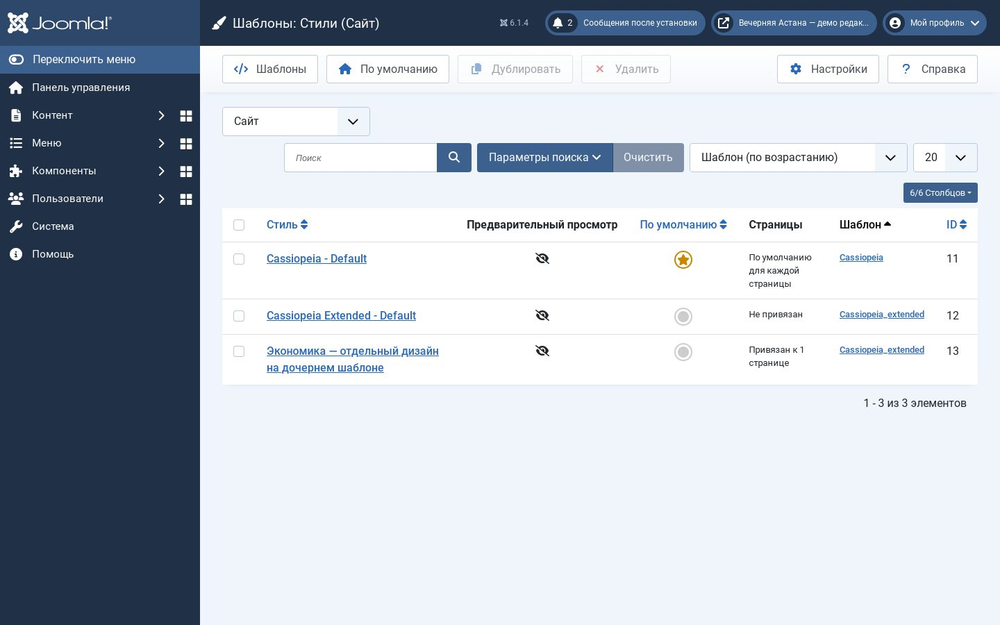
Стиль — это шаблон плюс набор его параметров. Для демонстрации к двум штатным стилям добавлен третий, «Экономика — отдельный дизайн на дочернем шаблоне»: тот же Cassiopeia Extended с другими цветами, системными шрифтами, резиновой сеткой и прилипающей шапкой. Стилей может быть сколько угодно, и каждый назначается пунктам меню.
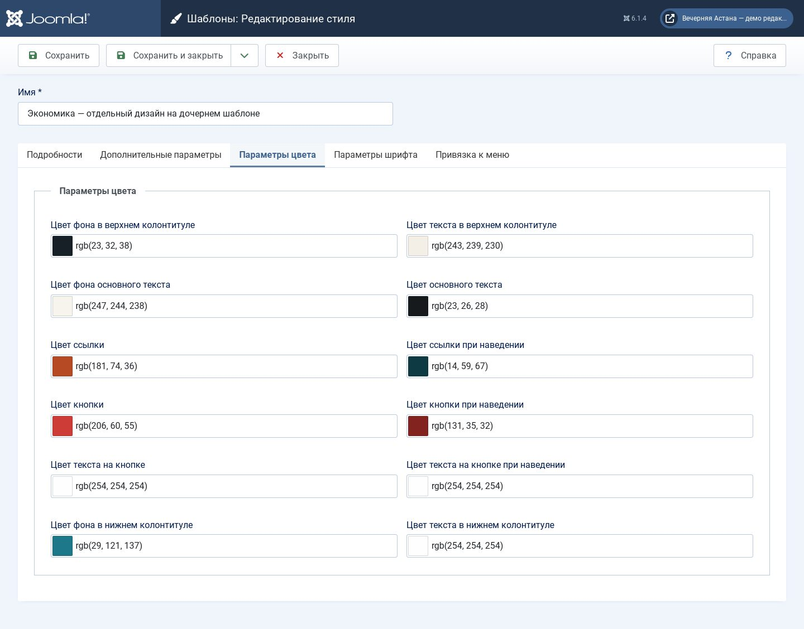
Шапка, фон, текст, ссылки, кнопки, подвал — всё меняется в форме. Для спецпроекта этого достаточно; для полной свободы в ребёнке правят SCSS и макеты. Важно, что обе дороги не конфликтуют с обновлениями ядра.
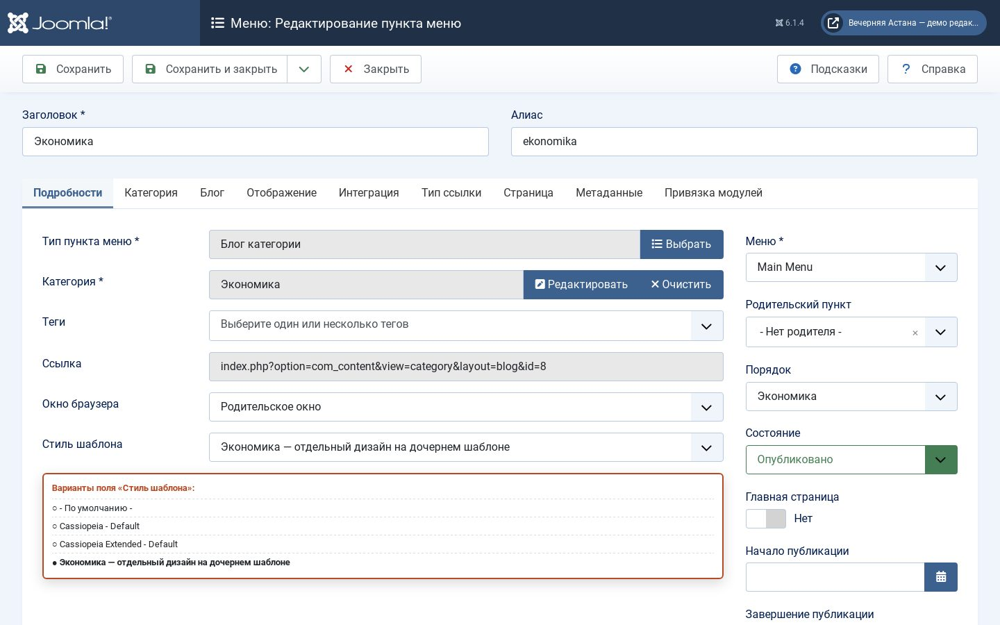
Вот где рождается разный дизайн у разных страниц: у пункта меню есть поле «Стиль шаблона». «По умолчанию» — стиль сайта; выбор другого стиля меняет облик всего раздела, который открывается через этот пункт. Разделу «Экономика» назначен новый стиль, главная осталась на штатном.
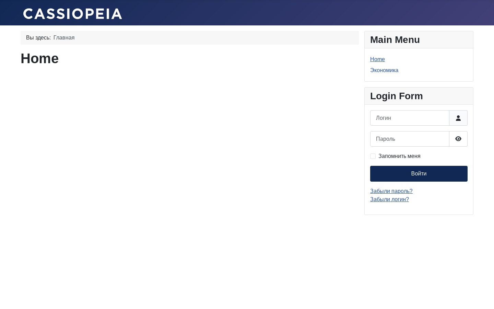
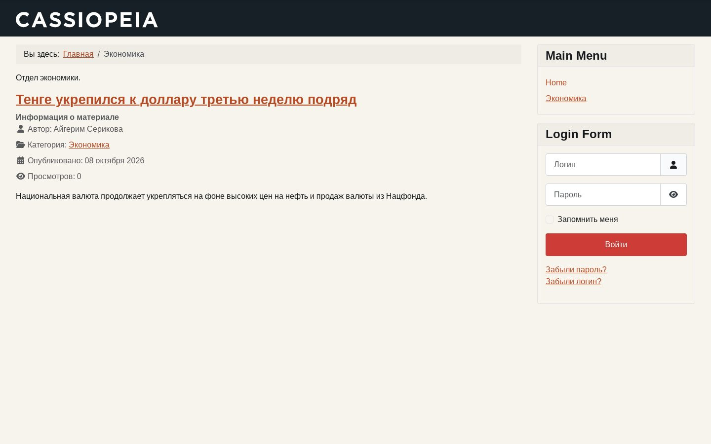
Главная и раздел «Экономика» сняты подряд, на одной установке, с одним содержимым меню. Слева — штатная Cassiopeia; справа — дочерний шаблон со своей шапкой, тёплым фоном, терракотовыми ссылками и системными шрифтами. Так же можно отдать спецпроектам стиль без шапки и боковых колонок, а архиву — компактный. Переключение — одно поле в пункте меню, никаких условий в коде.
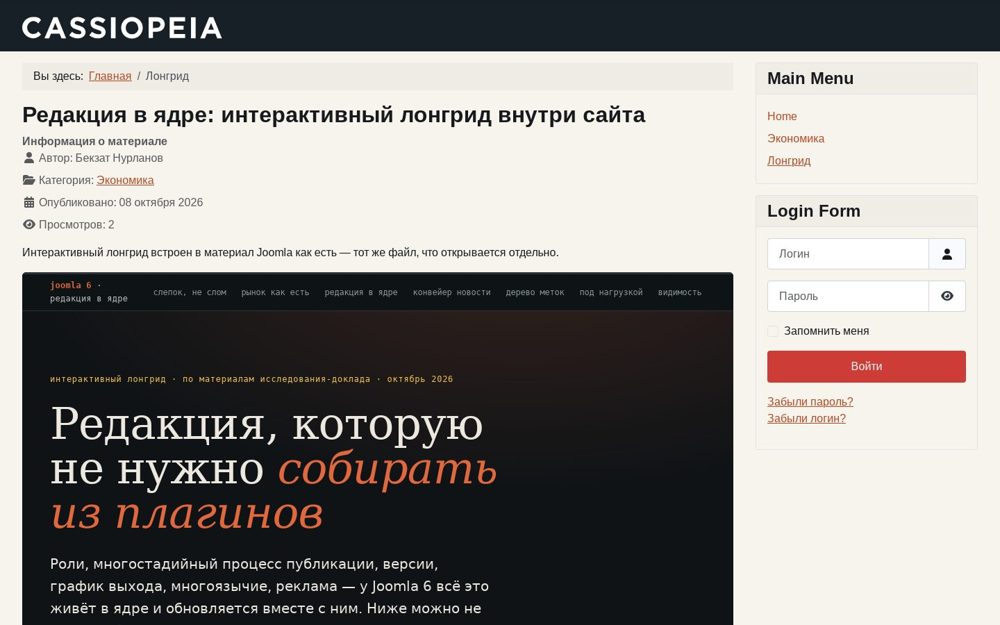
Интерактивный лонгрид из этого же исследования положен в папку сайта и встроен в материал одной строкой: пункт меню «Лонгрид» открывает его на стиле дочернего шаблона, с навигацией, модулем входа и хлебными крошками Joomla вокруг. Иначе лонгрид можно собрать прямо в материале — ядро пропускает такую разметку у доверенных групп — или отдать ему отдельный стиль без боковых колонок, чтобы остался только он. Дизайн спецпроекта и дизайн новостной ленты перестают быть компромиссом: каждому — свой стиль.
Что показано на 36 снимках. Четыре роли с разной шириной админки и разными кнопками в одной и той же карточке материала; процесс из пяти стадий и девяти переходов, где у каждого перехода — действие, письмо и право; категория как отдел и зона ответственности; те же права в лицевых формах; дочерние шаблоны и стили, дающие разным разделам разный дизайн, и интерактивный лонгрид, встроенный в сайт без переделки.
Что не сделано и названо. Собственное административное меню на роль (скрыть и штатный контейнер меню) здесь не настраивалось — ширину меню дали права групп; совместного редактирования и комментариев на полях у ядра нет; переходы не ветвятся по значению поля, поэтому «особая важность» — это выбор редактора или отдельная категория.
Снято 8 октября 2026 года на Joomla 6.1.4 (пакет GitHub), ru-RU 6.1.4.1 (JPathRu), PHP 8.3.6, MariaDB 10.11.14, WebKitGTK 2.50 в Xvfb. Сценарий собран скриптом на штатных моделях Joomla; воспроизводим по описанию шагов.